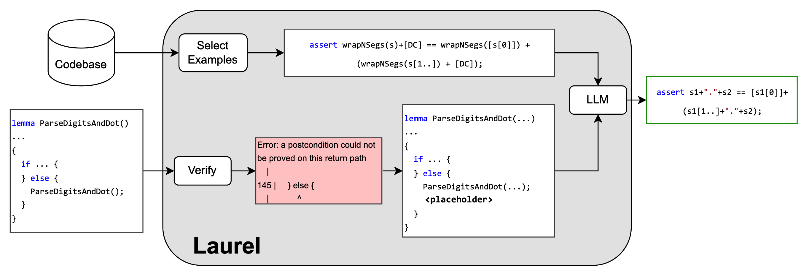

About
In our work Laurel, we introduce a novel, neuro-symbolic approach to generating helper assertions for brittle verification codebases. As part of this work, we curate and release DafnyGym, a dataset of Dafny snippets extracted from production projects with the objective of evaluating and improving the ability of large language models to repair real-world verified software bugs.
Citation
@misc{mugnier2024laurel,
title={Laurel: Generating Dafny Assertions Using Large Language Models},
author={Eric Mugnier and Emmanuel Anaya Gonzalez and Ranjit Jhala and Nadia Polikarpova and Yuanyuan Zhou},
year={2024},
eprint={2405.16792},
archivePrefix={arXiv},
primaryClass={cs.LO},
url={https://arxiv.org/abs/2405.16792},
}Correspondence to: emugnier@ucsd.edu